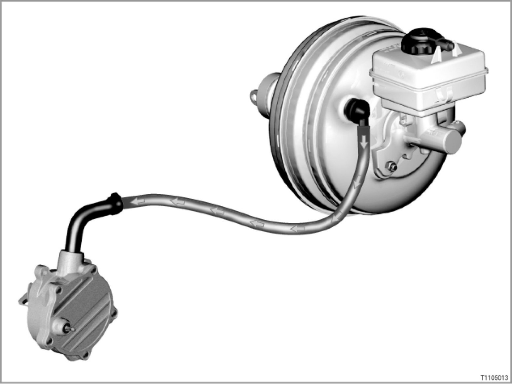

11 02 05 (130) Vacuum Supply
11 02 05 (130)
Vacuum supply
All models

Introduction
Vacuum is principally used for the brake booster.
The vacuum in the inlet pipe depends on the varying engine load.
Diesel engines do not normally have any vacuum in the inlet pipe. Vacuum on diesel engines is provided by a pump that generates the required vacuum.
On spark-ignition engines with Valvetronic, the throttle valve is almost always open when driving. This means that there is a lower low air pressure in the intake manifold.
Spark-ignition engines with low vacuum in the inlet pipe also have a pump that generates additional vacuum.
Brief description of components
The following components are involved in the vacuum supply system:
- Mechanical vacuum pump
A mechanic vacuum pump is fitted to diesel engines and spark-ignition engines with Valvetronic.
The vacuum pump is mechanically driven by the engine, e.g. via the exhaust camshaft.
- Suction-jet pump
As a rule, the suction-jet pump boosts the vacuum in the inlet pipe.
- Electric vacuum pump
On some engines, an electric vacuum pump is fitted for additional vacuum supply.
In certain temporary operating situations, the vacuum in the inlet pipe may be too low. In such cases, the inlet pipe vacuum cannot be adequately boosted by the suction-jet pump. In these situations, the electric vacuum pump ensures that sufficient vacuum is available.
Reason: After a cold start, an operating situation occurs in which there is very little inlet pipe vacuum due to the higher load. The electric vacuum pump is actuated for a certain time. This ensures that the brake is sufficiently boosted when maneuvering.
After a cold start, the DME will actuate the electric vacuum pump once only for max. 60 seconds.
The electric vacuum pump is actuated in the following situations:
- Engine-running signal from DME
- Coolant temperature below 60 °C
The electric vacuum pump is a vane-cell pump.
- Throttle valve
The throttle valve changes the cross-sectional area of the inlet pipe. This creates an inlet pipe vacuum behind the throttle valve, especially in overrun mode.
- DME or DDE: Digital engine electronics or digital diesel electronics
The DME or DDE actuates the components needed for system functions (e.g. solenoid valves, electric switching valves, electropneumatic pressure converters).
System functions
The system functions of the vacuum system are described using the following examples:
- Power assist for brakes
- Actuation of exhaust flaps
- Adjustment of variable turbine geometry
- Actuation of controlled damping mounts
- Exhaust gas recirculation
- Drawing off of blow-by gases from crankcase
- Blowing out activated charcoal filter
Power assist for brakes
The brake booster amplifies the force excerpted at the brake pedal. To do this, the brake booster stores part of the vacuum generated by the engine. The vacuum then amplifies the force generated by pressure on the brake pedal.
Actuation of exhaust flap
A controlled electropneumatic exhaust flap is fitted in the exhaust system. The exhaust flap enhances active sound-damping. The exhaust flap is closed by vacuum.
Adjustment of variable turbine geometry
The variable turbine geometry controls the boost pressure via adjustable guide vanes. The guide vanes are actuated by vacuum.
Actuation of controlled damping mounts
In the basic setting, there is no vacuum at the control component of the mount. The bypass in the mount is closed. Hydraulic fluid flows back and forth through a ring channel between the upper and lower chambers in the mount. The mount acts like a conventional hydraulic bearing. The mount has hard damping.
If a vacuum is applied to the mount's control component, the bypass will open. The hydraulic fluid then flows back and forth between the chambers through a larger cross-sectional area. The mount has softer damping.
Exhaust gas recirculation
With exhaust gas recirculation, part of the exhaust gas is take from behind the exhaust manifold. This is then fed back into the engine through the intake air duct. The exhaust gas recirculation pipe is located at the inlet to the intake manifold.
If a vacuum is applied to the exhaust gas recirculation valve, the exhaust gas recirculation pipe will open. The level of vacuum is determined by the opening in the exhaust gas recirculation valve.
Exhaust gases flow through a connecting pipe to the exhaust manifold and into the intake manifold.
Drawing off of blow-by gases from crankcase
The crankcase ventilation system uses vacuum to bleed the blow-by gases out of the engine block.
Blow-by gases are the small portion of the cylinder fill that passes by the piston rings and into the crankcase during compression. If the blow-by gases are not bled from the engine block through the crankcase ventilation system, they will accumulate in the crankcase. The blow-by gases would then apply pressure on the pistons from below. This would have a negative effect on the downward movement of the pistons in the intake stroke and operating stroke.
Blowing out activated charcoal filter
The fuel tank vent hose is connected to an activated charcoal filter. Vapors from the fuel tank are collected in the activated charcoal filter. The activated charcoal filter is connected to the intake manifold by a pipe. A fuel evaporation control valve is fitted in this pipe. When the fuel evaporation control valve is opened, the vacuum in the manifold draws in fresh air. At the same time, the fresh air blows out the fuel vapors collected in the activated charcoal filter.
Notes for service staff
Service staff should note the following points:
- General information: ---
- Diagnosis: ---
- Encoding/programming: ---
- Car and Key Memory: ---
Subject to change.